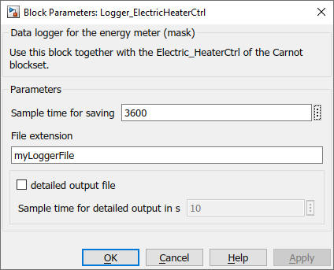

Path: Carnot/Outputs/Logger
Purpose
Creates data files which enable to evaluate the
Electric_Heater_Ctrl model of the Carnot blockset by using
cs_energy_electric_heater_ctrl
m-function.
Inputs:
Output:
The file contains the following information in timeseries. The timeseries appear in a structure with the variable "eh".
For a full list of data point names see
2_Basic_Concepts.
Parameters and Dialog Box

The file "electricheaterdetailoutput_extension.mat" is only written if the parameter "detailed output" is activated. Detailed outputs are written with a 60 s timestep only if the electric heater is in operation.
Characteristics
Direct Feedthrough Yes
Sample time entered
by user in block parameters
Vectorized No